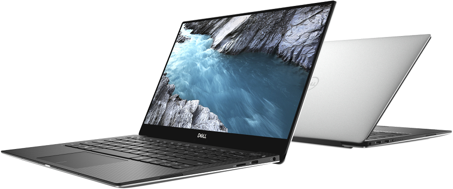

DELL XPS 13 9305 (9305-5028)
Bureautique, 13,3", Core i5-1135G7, RAM 8 Go, SSD 512 Go, Windows 10, 1,29 kg
L'ultra portable Dell XPS 13 9305 (9305-5028), avec un format très compact proche d'un 12 pouces, mise sur une mobilité extrême.. Il dispose d'un châssis en fibre de carbone pour un poids total de 1,29 Kg seulement... Inutile d'argumenter, vous êtes déjà séduits !
Descriptif - DELL XPS 13 9305 (9305-5028)
Laissez vous séduire par ce portable d'exception
Des bords ultra fins, une surface d'affichage plus grande
L'ultrabook XPS 13 9305 (9305-5028) de Dell repousse les limites de l'écran en proposant un modèle pratiquement sans bords ! Avec à peine plus de 4 mm d'épaisseur, le cadre permet à l'écran d'occuper 80,7% de l'espace du châssis, offrant ainsi une surface d'affichage plus grande. Ses dimensions et son poids en profitent vu qu'il peut se vanter d'une compacité extrême pour une mobilité accrue et d'une autonomie pouvant aller jusqu'à 10 heures. Il s'agit bien d'un 13 pouces mais dans un format plus proche d'un châssis 12 pouces !
Aluminium/fibre de carbone : une conception sans compromis
Comment ne pas admirer le bijou de Dell tant l'Ultrabook XPS 13 est une réussite visuelle et technologique ! Sa conception haut de gamme comprend notamment une coque en aluminium et un châssis en fibre de carbone pour allier légèreté, design et fiabilité. Vous apprécierez sans aucun doute son écran à la résolution Full HD (1920 x 1080) pour des images d'une grande précision.
Conçu pour votre tranquillité d'esprit
Le système est doté de fonctionnalités de management et de sécurité qui vous faciliteront la vie. Conseils et alertes vous informent des problèmes avant qu’ils ne surviennent et des outils à utiliser pour les résoudre lorsqu’ils se produisent, l’outil de sauvegarde Dell assure une sauvegarde et une restauration flexibles et automatisées afin de garantir la sécurité de vos photos, de votre musique et de vos fichiers.
Intel Core i5 Tiger Lake et RAM 8 Go
Si un bel écrin n'a jamais fait le bijou, Dell a pris le parti de soigner tout autant l'enveloppe que la technologie qu'elle renferme. Vous retrouverez ainsi un puissant processeur Intel Tiger Lake Core i5-1135G7 cadencé à 0,90 GHz (jusqu'à 4,20 GHz en mode turbo) couplé à 8 Go de RAM (4266 MHz) pour une fluidité mobile de tous les instants.
SSD 512 Go PCIe pour une réactivité extrême
Grâce au stockage de 512 Go au format SSD PCIe, vous pourrez compter sur des lancements de Windows 10 ou de tous vos logiciels en quelques secondes seulement. Plus qu'un confort, un indispensable....
- Processeur Intel Core i5-1135G7 (Quad-Core 0.9 GHz - 2.4 GHz / 4.2 GHz Turbo - 8 Threads - Cache 8 Mo)
- 8 Go de mémoire vive DDR4 4266 MHz (mémoire soudée, pas d'upgrade possible)
- Ecran de 13.3" avec résolution Full HD (1920 x 1080 pixels)
- SSD M.2 PCIe de 512 Go
- Communication sans fil performante : Wi-Fi 6 AX + Bluetooth 5.1
- 2 ports Thunderbolt 4 (Power Delivery et DisplayPort)
- Webcam 720p
- Clavier avec touches rétroéclairées
- Haut-parleurs avec technologie Waves MaxxAudio Pro
- Windows 10 Famille 64 bits